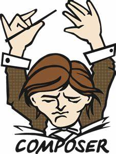

<!-- <section class="timeline">
  <h2>Skills</h2>
  <p>Here are some of the skills I possess.</p>
  <ul>

    <li>
      <div>
        <time>Front-end</time>
        
        
        
        
        
        
        
        
      </div>

    </li>
    <li>
      <div>
        <time>Back-end & Libraries</time>
        
        
        
        
        
        
        

      </div>

    </li>
    <li>
      <div>
        <time>Others</time>
        
        
        


      </div>

    </li>

  </ul>
</section> -->

<style>
    .timeline ul {
        background: rgba(56, 55, 55, 0.7); /* Use rgba for transparency */
        padding: 50px 0;
        backdrop-filter: blur(10px); /* Apply blur effect to create glassmorphism */
      }
      .timeline ul li {
        list-style-type: none;
        position: relative;
        width: 6px;
        margin: 0 auto;
        padding-top: 50px;
        background: rgba(255, 255, 255, 0.2); /* Use rgba for transparency */
      }
      .timeline ul li::after {
        content: "";
        position: absolute;
        left: 50%;
        bottom: 0;
        transform: translateX(-50%);
        width: 30px;
        height: 30px;
        border-radius: 50%;
        background: inherit;
        z-index: 1;
      }
      .timeline ul li div {
        position: relative;
        bottom: 0;
        width: 400px;
        padding: 15px;
        background: rgba(73, 71, 71, 0.719); /* Use rgba for transparency */
        backdrop-filter: blur(10px); /* Apply blur effect to create glassmorphism */
      }
      
      .timeline ul li div::before {
        content: "";
        position: absolute;
        bottom: 7px;
        width: 0;
        height: 0;
        border-style: solid;
      }
      
      .timeline ul li:nth-child(odd) div {
        left: 45px;
      }
      
      .timeline ul li:nth-child(odd) div::before {
        left: -15px;
        border-width: 8px 16px 8px 0;
        border-color: transparent rgba(160, 160, 160, 0.5) transparent transparent; /* Use rgba for transparency */
      }
      
      .timeline ul li:nth-child(even) div {
        left: -439px;
      }
      
      .timeline ul li:nth-child(even) div::before {
        right: -15px;
        border-width: 8px 0 8px 16px;
        border-color: transparent transparent transparent rgba(207, 203, 203, 0.5); /* Use rgba for transparency */
      }
      
      time {
        display: block;
        font-size: 1.2rem;
        font-weight: bold;
        margin-bottom: 8px;
      }
      .small-img {
        width: 100px; /* Adjust this value to the desired width */
        height: auto; /* This ensures the aspect ratio is maintained */
      }
      
      
      /* EFFECTS
      –––––––––––––––––––––––––––––––––––––––––––––––––– */
      
      .timeline ul li::after {
        transition: background 0.5s ease-in-out;
      }
      
      .timeline ul li.in-view::after {
        background: #2b2727;
      }
      
      .timeline ul li div {
        visibility: hidden;
        opacity: 0;
        transition: all 0.5s ease-in-out;
      }
      
      .timeline ul li:nth-child(odd) div {
        transform: translate3d(200px, 0, 0);
      }
      
      .timeline ul li:nth-child(even) div {
        transform: translate3d(-200px, 0, 0);
      }
      
      .timeline ul li.in-view div {
        transform: none;
        visibility: visible;
        opacity: 1;
      }
      
      
      /* GENERAL MEDIA QUERIES
      –––––––––––––––––––––––––––––––––––––––––––––––––– */
      
      @media screen and (max-width: 900px) {
        .timeline ul li div {
          width: 250px;
        }
        .timeline ul li:nth-child(even) div {
          left: -289px;
          /*250+45-6*/
        }
      }
      
      @media screen and (max-width: 600px) {
        .timeline ul li {
          margin-left: 20px;
        }
        .timeline ul li div {
          width: calc(100vw - 91px);
        }
        .timeline ul li:nth-child(even) div {
          left: 45px;
        }
        .timeline ul li:nth-child(even) div::before {
          left: -15px;
          border-width: 8px 16px 8px 0;
          border-color: transparent #ada8a9 transparent transparent;
        }
      }
      
      
      /* EXTRA/CLIP PATH STYLES
      –––––––––––––––––––––––––––––––––––––––––––––––––– */
      .timeline-clippy ul li::after {
        width: 40px;
        height: 40px;
        border-radius: 0;
      }
      
      .timeline-rhombus ul li::after {
        clip-path: polygon(50% 0%, 100% 50%, 50% 100%, 0% 50%);
      }
      
      .timeline-rhombus ul li div::before {
        bottom: 12px;
      }
      
      .timeline-star ul li::after {
        clip-path: polygon(
          50% 0%,
          61% 35%,
          98% 35%,
          68% 57%,
          79% 91%,
          50% 70%,
          21% 91%,
          32% 57%,
          2% 35%,
          39% 35%
        );
      }
      
      .timeline-heptagon ul li::after {
        clip-path: polygon(
          50% 0%,
          90% 20%,
          100% 60%,
          75% 100%,
          25% 100%,
          0% 60%,
          10% 20%
        );
      }
      
      .timeline-infinite ul li::after {
        animation: scaleAnimation 2s infinite;
      }
      
      @keyframes scaleAnimation {
        0% {
          transform: translateX(-50%) scale(1);
        }
        50% {
          transform: translateX(-50%) scale(1.25);
        }
        100% {
          transform: translateX(-50%) scale(1);
        }
      }
      
</style>